Snakes of Namibia
88 snake species are recorded in Namibia in SnakeList: 39 venomous and 49 non-venomous, from 11 families.
- 88species
- 39venomous
- 49non-venomous
- 11families
These totals count the snakes SnakeList records as living in Namibia. A species counts if it is recorded anywhere in the country, so not every snake lives in every region.
Species
Showing 88 species
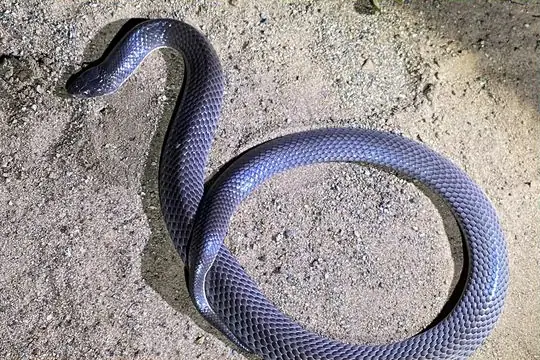
African Garter SnakeElapsoidea sundevallii Anchieta's CobraNaja anchietae
Anchieta's CobraNaja anchietae- No photo yetAngola File SnakeLimaformosa vernayi
 Angola Shovel-snoutProsymna angolensis
Angola Shovel-snoutProsymna angolensis Angolan Garter SnakeElapsoidea semiannulata
Angolan Garter SnakeElapsoidea semiannulata Angolan PythonPython anchietae
Angolan PythonPython anchietae Bangweulu Water SnakeLimnophis bangweolicus
Bangweulu Water SnakeLimnophis bangweolicus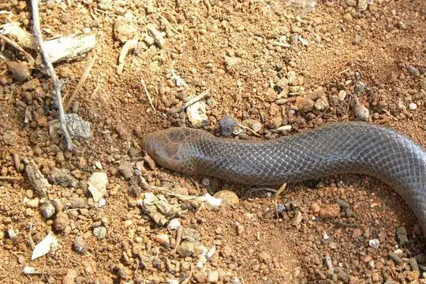
Beaked Burrowing AspAtractaspis duerdeni Bibron's Burrowing AspAtractaspis bibronii
Bibron's Burrowing AspAtractaspis bibronii Black File SnakeGracililima nyassae
Black File SnakeGracililima nyassae Black MambaDendroaspis polylepis
Black MambaDendroaspis polylepis Black-necked Spitting CobraNaja nigricollis
Black-necked Spitting CobraNaja nigricollis BoomslangDispholidus typus
BoomslangDispholidus typus Boulenger's Garter SnakeElapsoidea boulengeri
Boulenger's Garter SnakeElapsoidea boulengeri- No photo yetBoyle's Beaked Blind SnakeRhinotyphlops boylei
 Brown House Snake (capensis)Boaedon capensis
Brown House Snake (capensis)Boaedon capensis Brown House Snake (fuliginosus)Boaedon fuliginosus
Brown House Snake (fuliginosus)Boaedon fuliginosus Bug-eyed House SnakeBoaedon mentalis
Bug-eyed House SnakeBoaedon mentalis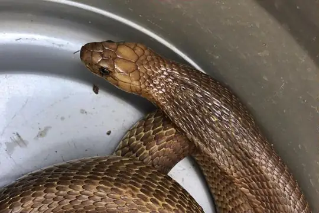
Cape CobraNaja nivea Cape Wolf Snake (capense)Lycophidion capense
Cape Wolf Snake (capense)Lycophidion capense Cape Wolf Snake (multimaculatum)Lycophidion multimaculatum
Cape Wolf Snake (multimaculatum)Lycophidion multimaculatum Common Egg EaterDasypeltis scabra
Common Egg EaterDasypeltis scabra Common File SnakeLimaformosa capensis
Common File SnakeLimaformosa capensis Common Night AdderCausus rhombeatus
Common Night AdderCausus rhombeatus Common Purple-glossed SnakeAmblyodipsas polylepis
Common Purple-glossed SnakeAmblyodipsas polylepis Congo Burrowing AspAtractaspis congica
Congo Burrowing AspAtractaspis congica Coral Shield CobraAspidelaps lubricus
Coral Shield CobraAspidelaps lubricus- No photo yetCunene RacerMopanveldophis zebrinus
 Damara Thread SnakeNamibiana labialis
Damara Thread SnakeNamibiana labialis- No photo yetDamara Tiger SnakeTelescopus finkeldeyi
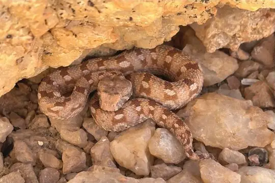
Desert Mountain AdderBitis xeropaga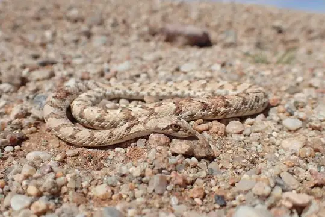
Dwarf Beaked SnakeDipsina multimaculata Dwarf Puff AdderBitis peringueyi
Dwarf Puff AdderBitis peringueyi Dwarf Sand SnakePsammophis angolensis
Dwarf Sand SnakePsammophis angolensis Elongate Quill-snouted SnakeXenocalamus mechowii
Elongate Quill-snouted SnakeXenocalamus mechowii- No photo yetFork-marked Sand SnakePsammophis trinasalis
 Frade’s Brown House SnakeBoaedon fradei
Frade’s Brown House SnakeBoaedon fradei Green Water SnakePhilothamnus hoplogaster
Green Water SnakePhilothamnus hoplogaster Grey-bellied Grass SnakePsammophylax variabilis
Grey-bellied Grass SnakePsammophylax variabilis- No photo yetHellmich's Wolf SnakeLycophidion hellmichi
 Horned AdderBitis caudalis
Horned AdderBitis caudalis Huíla SkaapstekerPsammophylax ocellatus
Huíla SkaapstekerPsammophylax ocellatus Jalla's Sand SnakePsammophis jallae
Jalla's Sand SnakePsammophis jallae Kalahari Purple-glossed SnakeAmblyodipsas ventrimaculata
Kalahari Purple-glossed SnakeAmblyodipsas ventrimaculata Karoo Tiger SnakeTelescopus beetzi
Karoo Tiger SnakeTelescopus beetzi Leopard Sand SnakePsammophis leopardinus
Leopard Sand SnakePsammophis leopardinus Lesser African PythonPython natalensis
Lesser African PythonPython natalensis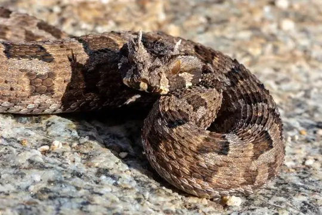
Many-horned AdderBitis cornuta Mole SnakePseudaspis cana
Mole SnakePseudaspis cana Mopane SnakeHemirhagerrhis nototaenia
Mopane SnakeHemirhagerrhis nototaenia Mozambique Spitting CobraNaja mossambica
Mozambique Spitting CobraNaja mossambica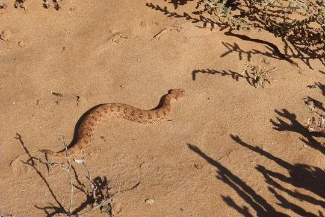
Namaqua Dwarf AdderBitis schneideri- No photo yetNamib Sand SnakePsammophis namibensis
 Namibian Wolf SnakeLycophidion namibianum
Namibian Wolf SnakeLycophidion namibianum Olive Marsh SnakeNatriciteres olivacea
Olive Marsh SnakeNatriciteres olivacea Olive Whip SnakePsammophis mossambicus
Olive Whip SnakePsammophis mossambicus Ornate Green SnakePhilothamnus ornatus
Ornate Green SnakePhilothamnus ornatus Pale Wolf SnakeLycophidion irroratum
Pale Wolf SnakeLycophidion irroratum Peter's Thread SnakeLeptotyphlops scutifrons
Peter's Thread SnakeLeptotyphlops scutifrons- No photo yetPlain Shovel-snout Snake (lisima)Prosymna lisima
 Puff AdderBitis arietans
Puff AdderBitis arietans Red-lipped SnakeCrotaphopeltis hotamboeia
Red-lipped SnakeCrotaphopeltis hotamboeia Rhombic SkaapstekerPsammophylax rhombeatus
Rhombic SkaapstekerPsammophylax rhombeatus Rufous Beaked SnakeRhamphiophis rostratus
Rufous Beaked SnakeRhamphiophis rostratus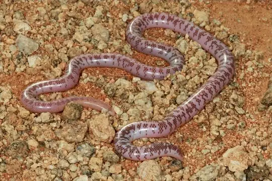
Schinz's Beaked Blind SnakeRhinotyphlops schinzi Schlegel's Giant Blind SnakeAfrotyphlops schlegelii
Schlegel's Giant Blind SnakeAfrotyphlops schlegelii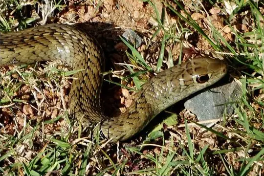
Short-snouted Grass SnakePsammophis brevirostris Slender Quill-snouted SnakeXenocalamus bicolor
Slender Quill-snouted SnakeXenocalamus bicolor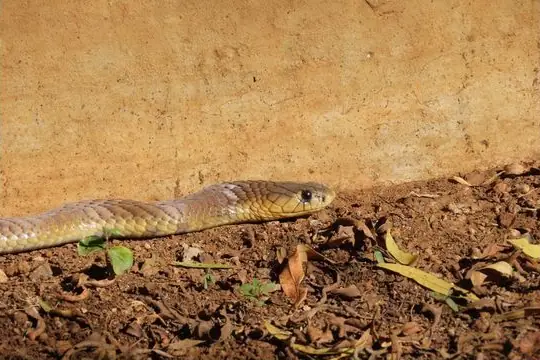
Snouted CobraNaja annulifera Southwestern Shovel-snoutProsymna frontalis
Southwestern Shovel-snoutProsymna frontalis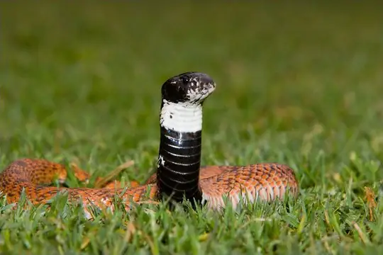
Speckled Shield CobraAspidelaps scutatus Spotted Bush SnakePhilothamnus semivariegatus
Spotted Bush SnakePhilothamnus semivariegatus Stripe-bellied Sand SnakePsammophis subtaeniatus
Stripe-bellied Sand SnakePsammophis subtaeniatus Striped Sand SnakePsammophis sibilans
Striped Sand SnakePsammophis sibilans Striped SkaapstekerPsammophylax tritaeniatus
Striped SkaapstekerPsammophylax tritaeniatus Tiger Cat SnakeTelescopus semiannulatus
Tiger Cat SnakeTelescopus semiannulatus Twig SnakeThelotornis capensis
Twig SnakeThelotornis capensis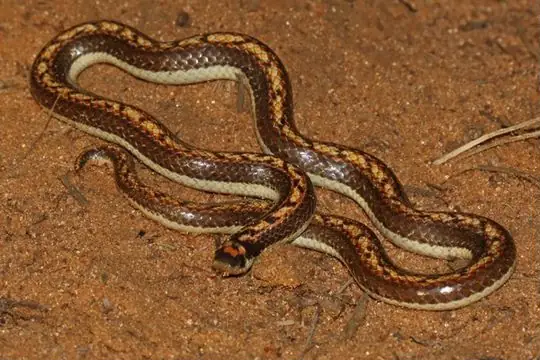
Two-striped Shovel-snoutProsymna bivittata Visser's Shovel-snoutProsymna visseri
Visser's Shovel-snoutProsymna visseri Western Bark SnakeHemirhagerrhis viperina
Western Bark SnakeHemirhagerrhis viperina Western Barred Spitting CobraNaja nigricincta
Western Barred Spitting CobraNaja nigricincta Western Beaked SnakeRhamphiophis oxyrhynchus
Western Beaked SnakeRhamphiophis oxyrhynchus Western Green SnakePhilothamnus angolensis
Western Green SnakePhilothamnus angolensis Western Keeled SnakePythonodipsas carinata
Western Keeled SnakePythonodipsas carinata Western Sand SnakePsammophis trigrammus
Western Sand SnakePsammophis trigrammus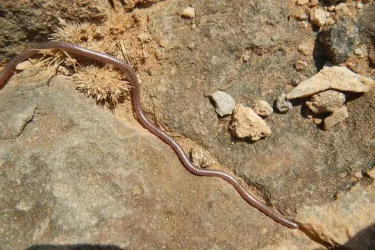
Western Thread SnakeNamibiana occidentalis Whip SnakePsammophis notostictus
Whip SnakePsammophis notostictus Boaedon mendesi
Boaedon mendesi
No snakes in Namibia match.
Namibia’s snakes in numbers
- Families: Psammophiidae 20, Colubridae 14, Lamprophiidae 13, Elapidae 12, Atractaspididae 7, Viperidae 7, Prosymnidae 5, Leptotyphlopidae 3, Typhlopidae 3, Pseudaspididae 2, Pythonidae 2.
- 1 is recorded in no other country in SnakeList: Karoo Tiger Snake.